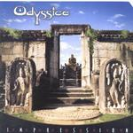

| Artist: | Odyssice |
| Title: | Impression |
| Label: | Cyclops CYCL 094 |
| Length(s): | 70 minutes |
| Year(s) of release: | 2000 |
| Month of review: | [03/2001] |
| 1) | Scream | 8.49 |
| 2) | Lokapalas | 4.19 |
| 3) | Senran | 6.24 |
| 4) | Children Of The Cloud | 4.36 |
| 5) | Olympus | 7.15 |
| 6) | Impression | 4.23 |
| 7) | Crusader | 3.26 |
| 8) | Legend | 7.04 |
| 9) | Anuradhapura | 7.46 |
| 10) | Flower Of Scotland | 2.08 |
| 11) | In Your Eyes | 3.25 |
| 12) | A Prophet's Dream | 10.43 |
Lokapalas opens with fast, typically eighties, symphonic keyboards and is rhythmically more adventurous than the foregoing track. The song is a speedy affair comparable to some of the faster instrumentals on Colin Bass's An Outcast Of The Islands. Nicely punctuating piano and an optimistic guitar riff stray a bit in the direction of the more commercial sounding Camel, but certainly not the simple minded one of say Remote Romance. More a bit in the line of Sasquatch.
Piano opens Senran in moody fashion. After some nice guitar playing, we come into an Indonesian sounding, beautifully melodic passage with keys and flute abounding. Optimistic, but never too happy, this is a terrific conclusion to this track.
Children Of The Cloud continues the line of the previous tracks, but the strength of this band does not lie alone in their ability to write a good song, think of a nice melody, but also to do it in a way that doesn't bore after a few songs. For Children Of The Cloud, the low zooming bass sound is most typical.
Olympus is another strongly melodic piece, mid-tempo and maybe on the whole a bit easy-going. The guitar plays a sharp guitar solo towards the end, and plays a question answer game with the drummer. The title track opens with spare percussion and continues the sheen of Southeastasian music lying over this album. The strongly moody keyboards in the background give the music a strongly Floydian feel.
Crusader is more bouncy piece with plenty of rhythmic and melodic variation. The style is now typically "progressive", but the fast and playful piano solo in the middle is really very nice, and makes for a definite turn in the song. The pace of the music continues to be rather high and reminds of earlier jazzrocky Camel.
Legend is something else again. Opening moodily with choral sounds and continues in low tempo fashion with low bass, piano and acoustic guitars. Not yet halfway through the Latimer like guitar sets in again. The music strangely enough also has some of the moods of Tangerine Dream here, because of the slowly gurgling sequencer sounds. The guitar solo has the same emotional style as the opener of the album, and is because of this also a highpoint on the album.
The first song I do not like is Anuradhapura, which is much too jolly sounding for me. Actually, the only part I do not like is the first part, Founded By The Aryans. I guess the Indian sounding up-tempo continuation is the second part The Sinhala Kingdom. A rather complex and full sounding passage in this track with plenty of flute (but NO Jethro Tull references). The guitar replays some of the happy melodies from the beginning of the track ending with some Barrett style guitar playing. Too bad about that first part.
Flower Of Scotland is well you know Flower Of Scotland. Played sparingly on acoustic guitar, this is a very subtle, almost shy version of this well-known track. In Your Eyes is also quite short. A rather romantic piece and not that interesting.
The closer A Prophet's Dream is the longest track on the album (but not by far). The song opens like a catchy tune (too catchy in my opinion) and can be likened to the poppy side of Camel (Nude era). I am not fond of this part, but the main part of the song that follows next, has a strong build-up with piano dominating the beginning and then the guitar sets in again. Again, the mood of Ice is evoked in a good way.